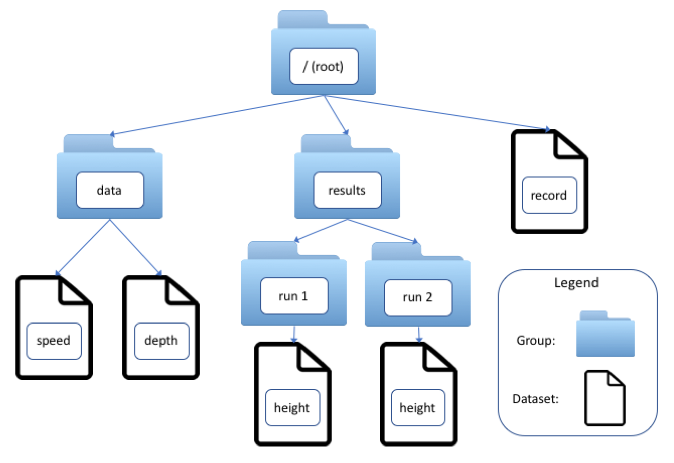

HDF5 Concepts
HDF5 is a format that is widely used in scientific software for efficiently storing and organizing data. The HDF5 standard and libraries are maintained by the HDF Group.
In HDF5, data are stored in multidimensional arrays called datasets. Datasets are organized hierarchically in groups, which also can contain other groups. Datasets and groups are conceptually similar to files and directories in a filesystem. In fact, every HDF5 file contains at least one group, the root group, denoted “/”, and groups and datasets are referred to using slash-delimited absolute or relative paths, which are more accurately called link names.
HDF5 has as one goal that data be “self-documenting” through the use of metadata. Dakota output files include two kinds of metadata.
Dimension Scales. Each dimension of a dataset may have zero or more scales, which are themselves datasets. Scales are often used to provide, for example, labels analogous to column headings in a table (see the dimension scales that Dakota applies to moments) or numerical values of an indepenent variable (user-specified probability levels in level mappings).
Attributes. key:value pairs that annotate a group or dataset. A key is always a character string, such as dakota_version, and (in Dakota output) the value can be a string-, integer-, or real-valued scalar. Dakota stores the number of samples that were requested in a sampling study in the attribute ‘samples’.